Si sólo vas a leer una hoja, que sea ésta; el resto del manual explica cada paso.
PROCESO\Auxiliar IV y su árbol.PROCESO\Auxiliar IV → ⬇ Generar sincronizar.py en la carpeta → elige esa carpeta.modelo.json en la carpeta de la obra.T-5 alimenta la sección T-5 de la app. Cambiar descripciones en RAM es cambiar secciones.RAM analiza; la app diseña. Entre los dos hay unos scripts de Python que corren dentro de RAM y un archivo, modelo.json, que los une.
Todos los .py los genera la app; no hay que editarlos. Corren dentro de RAM, así que ven el modelo que tengas abierto.
| Script | Qué hace | Qué toca |
|---|---|---|
| sincronizar.py | Lee el modelo analizado y lo escribe en modelo.json, con las medidas reales de cada sección sacadas de las tablas de RAM, los desplazamientos de las trabes para las flechas, en cada columna P, M22 y M33 simultáneos de cada combinación y las reacciones de los apoyos por caso de carga. | Sólo escribe modelo.json en la carpeta de la obra. |
| instalar_catalogo.py | Da de alta nuestras secciones y concretos en el grupo Personales de RAM. | La base de datos de RAM, con respaldo en el Escritorio. |
| aplicar_agrupacion.py | Pone a cada miembro la descripción (T1, T2… o C1, C2…) y la sección de la agrupación elegida. | El modelo abierto. Deja un «Deshacer» en 1 Agrupación. |
| edificio_prueba.py | Construye y analiza un edificio de práctica. | Sólo un modelo nuevo y vacío. |
modelo.json en una carpeta
que los dos conocen es el puente: RAM lo escribe, la app lo lee.
Una sola vez por computadora, no por proyecto: el catálogo queda en la base de datos de RAM y lo ve cualquier modelo que abras ahí.
instalar_catalogo.py → Ctrl+R.10 X 25 · 15 X 20 · 15 X 25 · 15 X 30 · 15 X 35 · 15 X 40 · 15 X 45 · 20 X 20 · 20 X 25 · 20 X 30 · 20 X 35 · 20 X 40 · 20 X 45 · 20 X 50 · 25 X 20 · 25 X 25 · 25 X 30 · 25 X 35 · 25 X 40 · 25 X 45 · 25 X 50
COL 15 X 15 · COL 15 X 20 · COL 15 X 25 · COL 20 X 20 · COL 20 X 25 · COL 25 X 10 · COL 25 X 25 · COL 30 X 30 · COL 36 X 36
Nombre «b X h» en cm, recubrimiento de 3 cm. Las columnas llevan el prefijo COL para que no choquen con una trabe de las mismas medidas.
| Material | f'c | Ec (kg/cm²) | Clase NTC |
|---|---|---|---|
| F'C 200 | 200 | 113 137 | 2 · 8 000√f'c |
| F'C 250 | 250 | 221 359 | 1 · 14 000√f'c |
| F'C 300 | 300 | 242 487 | 1 |
| F'C 350 | 350 | 261 916 | 1 |
| F'C 400 | 400 | 280 000 | 1 |
Todos con ν = 0.2, 2.4 t/m³, α = 1×10⁻⁵ /°C, fy = fyt = 4 200 kg/cm², Es = 2.04×10⁶ kg/cm². Clase 1 con agregado calizo (14 000√f'c).
Respaldo RAM - Sections - Personales - …) y nunca pisa el primer respaldo. Si no puede respaldar, no escribe.
Una vez por obra. Todo lo de la app vive en una carpeta, PROCESO\Auxiliar IV, con nombres fijos: la app y los scripts saben dónde leer y dónde dejar cada cosa.
scripts del repositorio de la app; se corre en la carpeta donde van las obras): elige el tipo, escribe el nombre y arma RS-Nombre con sus cuatro carpetas y el árbol de PROCESO\Auxiliar IV. El modelo de RAM (.retx) se queda donde lo guardan siempre.PROCESO\Auxiliar IV: en el explorador, Mayús + clic derecho sobre la carpeta → Copiar como ruta. Pégala en el campo.PROCESO: la app usa, o crea, Auxiliar IV adentro) y acepta que la app edite archivos ahí. Completa el árbol si falta algo y deja dentro el sincronizar.py.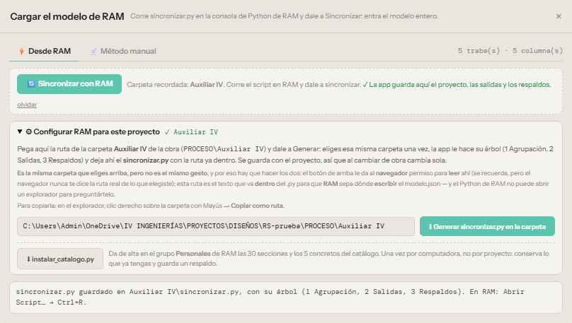
PROCESO\Auxiliar IV pegada y ✓ Auxiliar IV junto a Configurar;
arriba, Carpeta recordada y ✓ La app guarda aquí el proyecto, las salidas y los respaldos (tiene permiso de edición);
abajo, el aviso de que sincronizar.py quedó en la carpeta con su árbol. Si en lugar del ✓ verde dice «La app sólo la lee», dale a Sincronizar y acepta el permiso de edición.| Cuando… | Queda en |
|---|---|
| 💾 Guardar | proyecto.json; el que había pasa a 3 Respaldos\proyecto <fecha>.json. Si ése era de otra obra, pregunta antes de pisarlo. |
| 🔄 Sincronizar con un modelo nuevo | El modelo.json anterior pasa a 3 Respaldos\modelo <fecha>.json. Al sincronizar no se leen 1 Agrupación, 2 Salidas ni 3 Respaldos. |
| ⬇ aplicar_agrupacion.py | 1 Agrupación\aplicar_agrupacion <fecha>.py; su «Deshacer» también queda ahí. |
| Memoria, verificación, DXF, SVG, alzados, Double Check | 2 Salidas\Memoria, \Planos y \Double Check. |
Se guardan los 30 respaldos más recientes de cada tipo. Un proyecto sin carpeta configurada, o si el navegador no da permiso de edición, descarga como siempre. Chrome o Edge a veces vuelven a pedir el permiso al abrir la app otro día: es un clic.
sincronizar.py para que RAM sepa dónde escribir, porque el Python de RAM no puede abrir un explorador para preguntarlo.
Para apuntar la obra a otra carpeta, usa olvidar junto al botón de sincronizar y vuelve a elegirla.
Cambias el modelo, analizas, sincronizas. La app se entera de las demandas nuevas y te avisa de lo que no cuadra.
modelo.json.modelo.json de la carpeta y actualiza el proyecto.T-5 alimenta la sección T-5.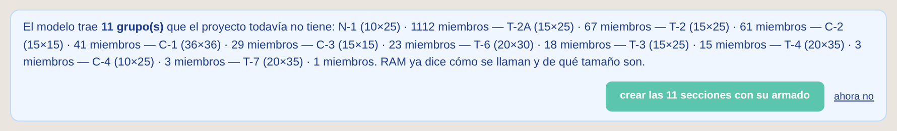
crear las N secciones con su armado las da de alta con las medidas de RAM y un armado propuesto (capítulo 8). ahora no las deja para después.
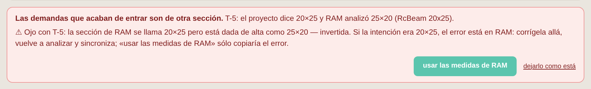
El proyecto dice una sección y RAM analizó otra. Si el cambio fue a propósito en RAM, usar las medidas de RAM. Si RAM está mal (como aquí, una sección que se llama 20×25 pero está dada de alta como 25×20), corrígela allá, reanaliza y sincroniza: copiar las medidas sólo copiaría el error.
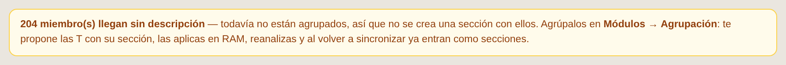
No se crea una sección con ellos: todavía no están agrupados. Ve a Módulos → Agrupación (capítulos 5 a 7).
Al estructurar, todas las trabes suelen ser 15×20 y sin descripción. La agrupación propone unas pocas T, cada una con su sección, para iterar con un modelo estable y rigideces bien repartidas, con los menos diseños posibles.
Se abre en Módulos → Agrupación (o Ctrl+K y «agrupación»). Toma sola el último modelo sincronizado; también puedes cargar un modelo.json.
Arriba del paso 1 está el interruptor Trabes | Columnas: este capítulo y el siguiente son de trabes; las columnas, en el capítulo 7.
Cada casilla es un grupo de hoy (una descripción de RAM, o (sin nombre)). Vienen marcadas las trabes de 15 cm o más; las nervaduras y las columnas no. Abajo, los anchos y los peraltes que se pueden proponer: el ancho suele mandarlo el muro o la columna y el peralte la arquitectura (plafones, ventanas, altura libre). tope marca de un golpe todos los peraltes hasta ése. Con un tope, la propuesta compensa con más ancho si lo permites; si una trabe no cabe en ninguna sección permitida, su grupo se marca ⚠ y la verificación dice si se puede armar con más acero. La app recuerda lo que marcaste.
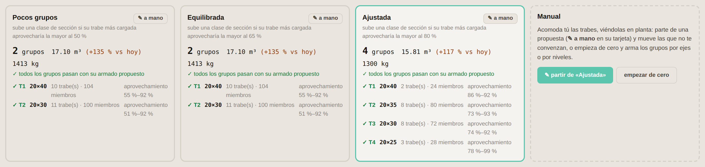
Cómo se arman:
Cómo leer una tarjeta: número de grupos; m³ de concreto en trabes y su cambio contra hoy (si hoy todo es 15×20, crece: es lo esperado); kg de acero del armado propuesto; y por grupo su sección y el rango de aprovechamiento de sus trabes (100 % = justo). Un rango muy abierto, como 30–95 %, quiere decir que hay trabes ligeras pagando la sección de las pesadas.
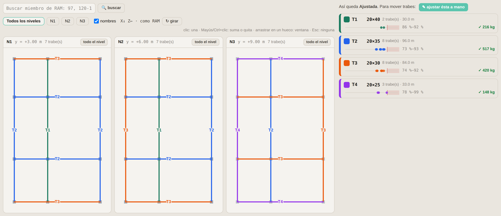
La propuesta elegida se dibuja por nivel, cada grupo de su color, con las columnas en gris. Al pasar el mouse sobre una trabe se ven su longitud, sus demandas, la sección que le basta y qué tanto aprovecha la de su grupo. Una línea punteada roja encima es una trabe que no cabe en la sección de su grupo.
X↓ Z← · como RAM).
Con ↻ girar se gira por cuartos de vuelta; nunca sale en espejo. La app recuerda cómo la dejaste.
1 Agrupación un Deshacer agrupación <fecha>.py (en el Escritorio si la obra no tiene carpeta) y luego pone a cada miembro su descripción y su sección.Si algo no convence: cierra el modelo sin guardar y no pasó nada, o corre el Deshacer de 1 Agrupación, que regresa cada miembro a la descripción y la sección que tenía.
Cuando el criterio fino es tuyo: acomodar por ejes o por niveles, juntar lo que se va a construir igual o fijar un peralte que pide la arquitectura. Se hace en la app, no en RAM, y sale el mismo aplicar_agrupacion.py.
El acomodo aparece como cuarta tarjeta, Manual, con sus números y su verificación como las otras, y se edita en el paso 3.
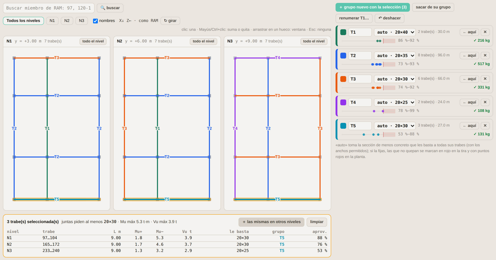
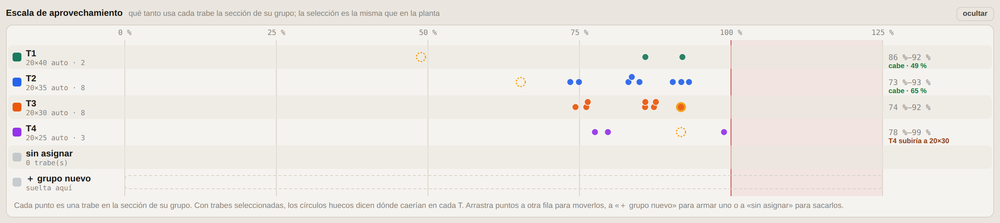
Arriba de la planta, una fila por grupo y un punto por trabe, en el aprovechamiento de la sección de su grupo: como la escala de momentos de Secciones, pero para toda la agrupación. Los puntos juntos y a la derecha son un grupo bien aprovechado; los que quedan solos a la izquierda son trabes que pagan una sección que no necesitan.
| Gesto | Qué hace |
|---|---|
| Buscar miembro de RAM (arriba de la planta) | Escribe el número de miembro de RAM (varios con coma, o un rango 120-124) y Enter: selecciona la trabe continua donde está, la muestra en su nivel y la hace parpadear. Mayús+Enter la suma a la selección. Si no la encuentra dice por qué: no existe, es columna o su grupo no está marcado en «Qué agrupar». |
| Clic en una trabe | La selecciona (sólo ésa). Al pasar el mouse se ven sus números de miembro. |
| Mayús o Ctrl + clic | La agrega o la quita de la selección. |
| Arrastrar en un hueco | Selección por ventana: las trabes cuyo tramo cae dentro. Con Mayús, se suman. |
| todo el nivel | Todas las trabes de ese nivel. |
| ＋ las mismas en otros niveles | Agrega las trabes que están en el mismo lugar en planta en los demás niveles: la misma trabe en N1, N2, N3… |
| Clic en el cuadro de color de un grupo | Selecciona sus trabes. |
| Esc o limpiar | Ninguna. |
Con trabes seleccionadas aparece la tabla: nivel, longitud, Mu+, Mu−, Vu, la sección que le basta a cada una, su grupo y cuánto lo aprovecha. Arriba dice qué sección piden juntas: si armaras un grupo sólo con ellas, ésa sería su sección.
| Botón | Qué hace |
|---|---|
| ← aquí (en un grupo) | Mueve las trabes seleccionadas a ese grupo. |
| ＋ grupo nuevo con la selección | Crea el siguiente T libre con esas trabes. |
| sacar de su grupo | Las deja sin asignar. Al aplicar, en RAM no se tocan. |
| ✕ (en un grupo) | Quita el grupo; sus trabes quedan sin asignar. |
| Nombre del grupo | Se escribe libre (T1, TR-2, TE…) y se guarda al salir del campo o con Enter. Es la descripción que tendrá en RAM. |
| Sección: auto o fija | auto toma la de menos concreto que les basta a todas sus trabes, con los anchos permitidos. Si eliges una del catálogo queda fija, y las trabes que no quepan se marcan. |
| renumerar T1… | Renombra T1 a la sección más grande … Tn a la más chica, como las propuestas. |
| ↶ deshacer | Regresa el último cambio (hasta 60). |
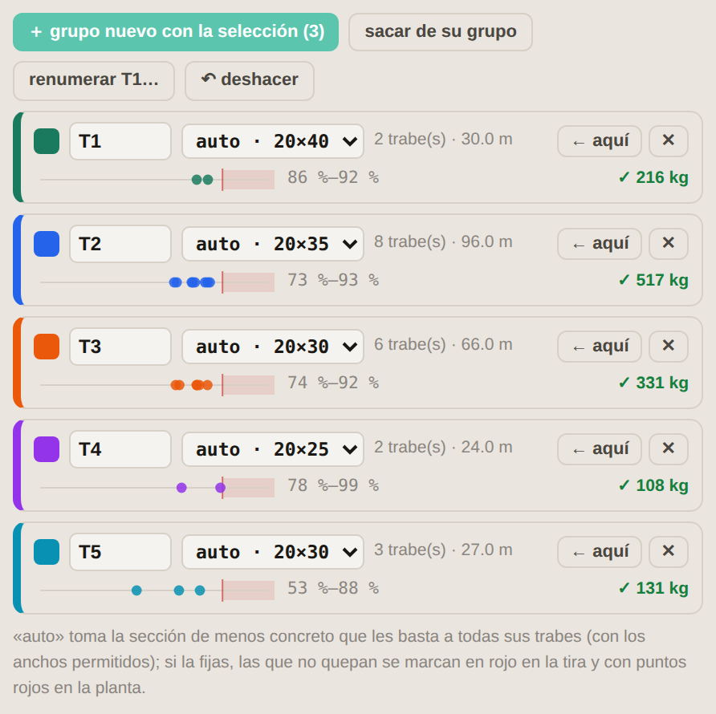
El mismo agrupador, con flexocompresión: cada columna se ubica en el diagrama de interacción de cada sección del catálogo y se juntan las que caben en la misma. Se elige con el interruptor Columnas, arriba del paso 1.
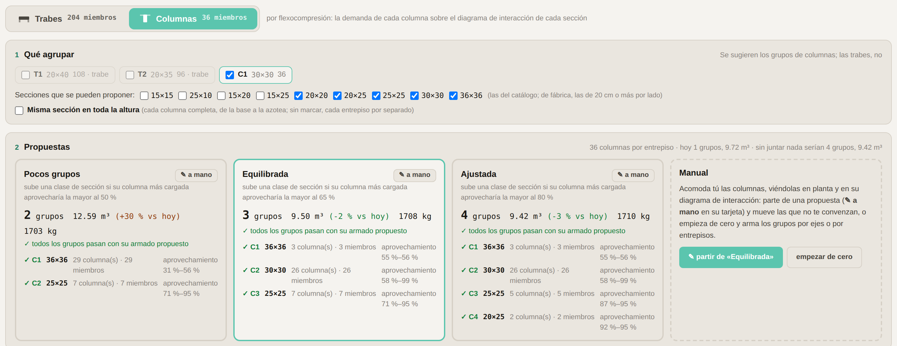
modelo.json es de antes, la app lo avisa en el paso 1.
Genera el script otra vez (capítulo 3), córrelo en RAM y sincroniza.
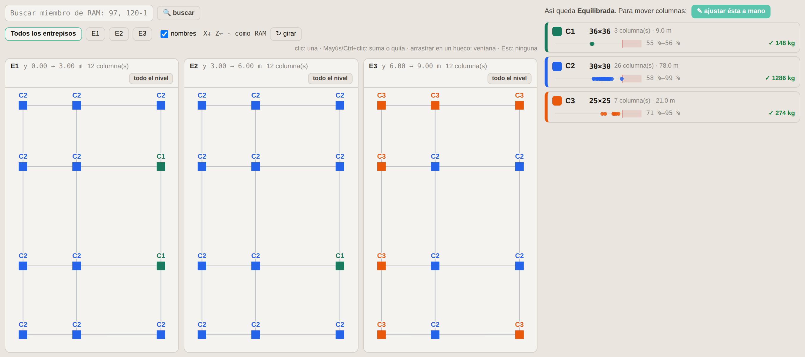
Todo lo del capítulo 6 funciona igual: la escala de aprovechamiento, seleccionar en la planta o en la escala, arrastrar a otro grupo o a ＋ grupo nuevo, fijar la sección, renumerar C1…, buscar un miembro de RAM y deshacer. ＋ la misma en otros entrepisos agrega la columna de arriba y la de abajo. Con la sección fija, una columna que no cabe se ve con borde rojo.
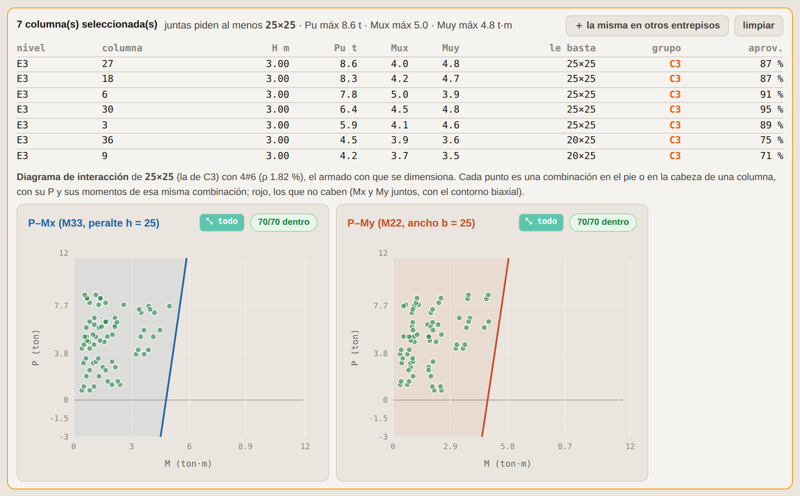
Con columnas seleccionadas aparece su diagrama, en X y en Y: el de la sección de su grupo si todas están en uno, o el de la sección que piden juntas. Verde, los puntos que caben; rojo, los que no. X e Y se dibujan por separado pero se revisan juntos, así que un punto que en cada dibujo parece holgado puede estar cerca del 100 %: el número que manda es el de la tabla. Al pasar el mouse sobre una columna se ve qué combinación y qué extremo la rigen.
⬇ aplicar_agrupacion.py baja aplicar_agrupacion columnas <fecha>.py, con cada C y su sección COL …. Trabes y columnas se aplican por separado, cada una con su script y su Deshacer, en el orden que quieras.
Luego, como siempre: reanaliza, sincroniza y vuelve a abrir Agrupación.
Cuando la sincronización trae grupos nuevos, la app los da de alta con las medidas de RAM y un armado propuesto, verificado con los mismos motores que Longitudinal y Columnas.
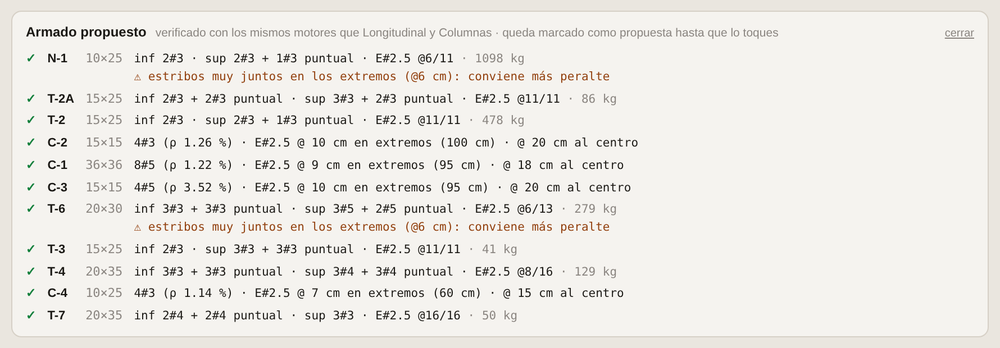
Varillas corridas arriba y abajo con el mínimo que da el momento, bastones o puntuales donde hacen falta y estribos #2.5 (o #3) de dos ramas con su separación en L/4 y al centro. El número de varillas corridas por lecho se limita por el ancho para que se pueda colar: hasta 3 en 25 cm, 4 en 35 cm, 5 en más.
El arreglo con menos varillas que pasa, con cuantía entre 1 y 4 %, separación centro a centro no mayor de 20 cm y varilla #4 o mayor si un lado mide 20 cm o más. Los estribos salen por zonas con la altura del modelo (capítulo 9).
La envolvente de una columna son sus combinaciones con P, M22 y M33 simultáneos, en el pie y en la cabeza de cada miembro. El módulo Columnas las dibuja y las revisa todas; los informes listan la que rige de cada miembro.
Con las secciones creadas, el trabajo es el de siempre, ahora con las demandas del modelo ya dentro.
Módulos → Longitudinal. El alzado de cada trabe contra las demandas del modelo por estaciones: dónde hacen falta bastones y la envolvente desarrollada. Ahí también se ve el modelo reconstruido (planta, frente, lado e isométrica) para ubicar una trabe o comprobar que los tramos se encadenaron como esperas. La planta está orientada como RAM: Z a la izquierda y X hacia abajo.
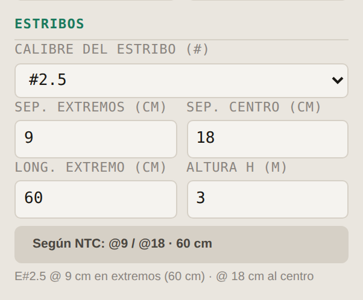
En la columna: calibre del estribo, separación en los extremos y al centro, longitud de la zona extrema y altura libre H. Según NTC llena las tres con las reglas de abajo; puedes cambiarlas a mano.
Los informes, el dibujo y la memoria dicen las dos separaciones. Una columna sin zonas se sigue informando como antes.
Al abrir Memoria de cálculo, los datos que la app ya conoce llegan escritos, y bajo cada uno dice de dónde salió:
Sólo se llenan los campos vacíos o que siguen con su valor de fábrica: lo que escribiste no se toca. ↻ Llenar con Pesos Unitarios y el modelo los vuelve a tomar. Si el proyecto tiene cimientos, el Word trae su capítulo (capítulo 11).
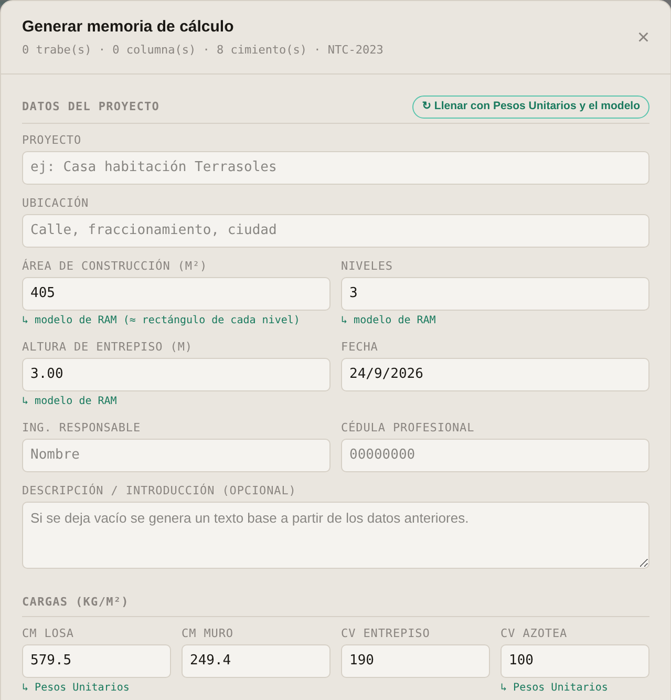
Las flechas de todas las trabes, con los desplazamientos que calcula RAM, corregidos con la inercia agrietada del armado de cada sección y con las diferidas, contra los límites de la NTC.
sincronizar.py actual: es el que lee los desplazamientos. Si la app dice que el modelo.json no los trae, genera el script otra vez (capítulo 3).CS = 1·CM + 1·CV (si tu modelo nombra distinto los casos, cambia su papel); la tabla se ordena del tramo más comprometido al menos.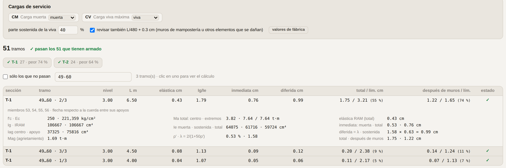
| Opción | Qué es |
|---|---|
| Papel de cada caso | muerta, viva, viva media o no usar. Sale de la categoría del caso en RAM (CM muerta, CV viva; la accidental y la media no); cámbialo si tu modelo los llama distinto. Arriba se ve la combinación que resulta: CS = 1·CM + 1·CV. |
| Viva sostenida en la diferida | 100 % de fábrica: la sostenida es CS completa. Se puede bajar, o marcar un caso como viva media para que la diferida use ése. |
| Revisar L/480 + 0.3 cm | Activado de fábrica. Apágalo si las trabes no cargan elementos que se dañen con la flecha. |
Filtros: por sección (los botones con su peor porcentaje), sólo los que no pasan y por miembro de RAM. Clic en un tramo abre su cálculo completo: Ig, Iag, Mag, los momentos de servicio, Ie, ρ′, λ y la suma.
Zapatas aisladas, corridas bajo muro, corridas con contratrabe, muros de contención de concreto y de piedra, y cimientos de mampostería: dimensionados, armados y detallados, con su memoria paso a paso. Las cargas se capturan o salen de las reacciones de RAM.
La pestaña Cimentaciones está siempre, junto a Columnas. Arriba: 🪨 Suelo y criterios de la obra, ⚡ Desde RAM, la 📄 Memoria PDF y los planos DXF y SVG. Debajo, un chip por cimiento, con un punto que dice si cumple, y + Nuevo.
Un cimiento puede tener su propio suelo (bloque Suelo de su formulario): lo que captures ahí manda sobre el de la obra, y propio ↺ lo regresa.
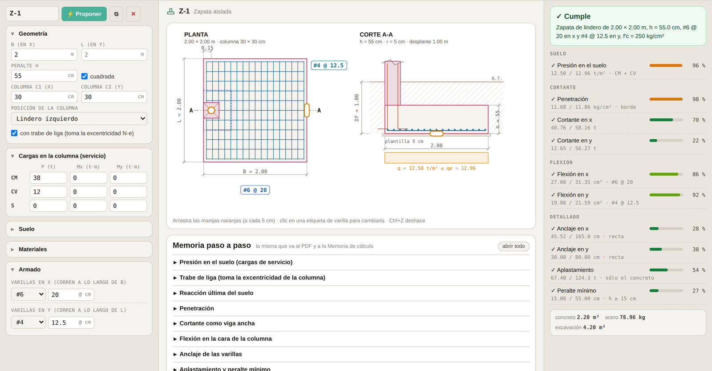
#4 @ 20) abre el selector de # y separación.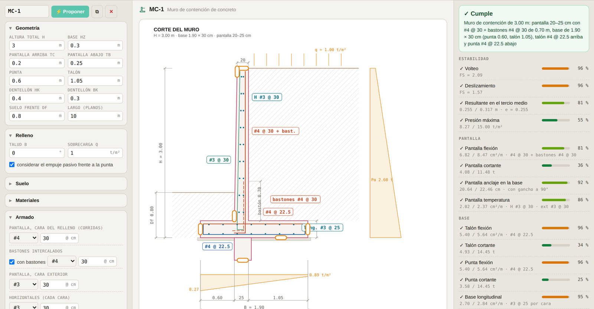
| Tipo | Qué revisa |
|---|---|
| Zapata aislada | Céntrica, de lindero o de esquina, con momentos. Suelo con el área efectiva B′ × L′; penetración con la sección crítica de 4, 3 o 2 lados y transferencia de momento; cortante como viga ancha; flexión en las cuatro caras; anclaje recto o con gancho; aplastamiento, con los arranques que hagan falta. En lindero o esquina, con trabe de liga (toma N·e y el suelo trabaja parejo) o sin ella. |
| Zapata corrida | Por metro, bajo muro de concreto (sección crítica en la cara) o de mampostería (a t/4 dentro del muro), al centro o de lindero. Suelo, cortante, flexión transversal, anclaje y el acero longitudinal de temperatura. |
| Corrida con contratrabe | Varias columnas sobre un eje, por el método rígido (presión lineal). Diagramas de cortante y momento de la contratrabe, armado abajo y arriba con los motores de la app, estribos, y los aleros como voladizos. Centrar resultante ajusta los voladizos para que la presión salga pareja. |
| Muro de contención | De concreto armado, en voladizo: volteo, deslizamiento (con dentellón y pasivo si lo pides), resultante en el tercio medio y presión máxima; pantalla, talón y punta a flexión y cortante; anclaje de la pantalla en la base; temperatura. |
| Muro de piedra | De gravedad, de piedra braza: la misma estabilidad, juntas sin tensión a cada altura, y compresión y cortante en la mampostería. ⚡ Proponer prueba también inclinar el frente. |
| Cimiento de mampostería | Trapecio o medio trapecio (lindero), como la hoja de la oficina: el ancho por suelo, el escarpio por cortante y a 1.5 del vuelo y, en lindero, la separación máxima de muros perpendiculares (tabla 8.4 de la NTC-Mampostería). |
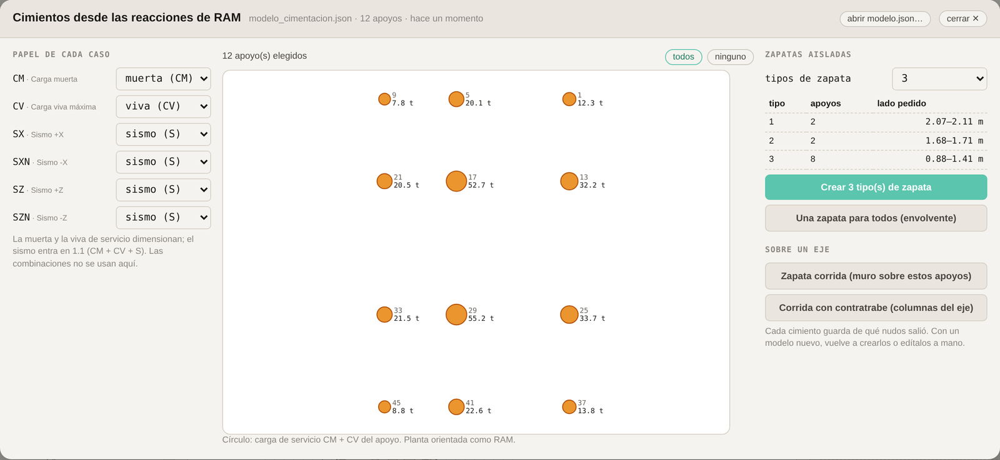
sincronizar.py actual: lee las reacciones de cada caso de carga. La ventana toma sola el último modelo; también puedes abrir modelo.json….Cada cimiento guarda de qué nudos salió y lo dice arriba de su formulario. Una zapata tipo se revisa además con la reacción de cada uno de sus apoyos: la envolvente junta la P más pesada con el M más grande, pero con el sismo descargando puede mandar la columna ligera de la esquina. La columna de cada apoyo sale del modelo con su sección real.
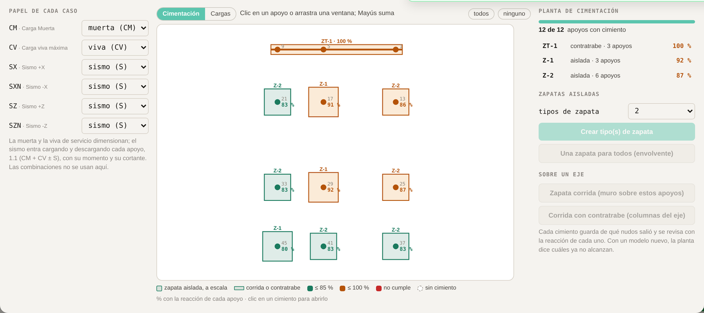
Después de crear, la ventana se queda abierta en la vista Cimentación (la otra, Cargas, es la de antes): cada apoyo con su cimiento dibujado a escala, las aisladas como cuadros y las corridas y contratrabes como franjas sobre su eje.
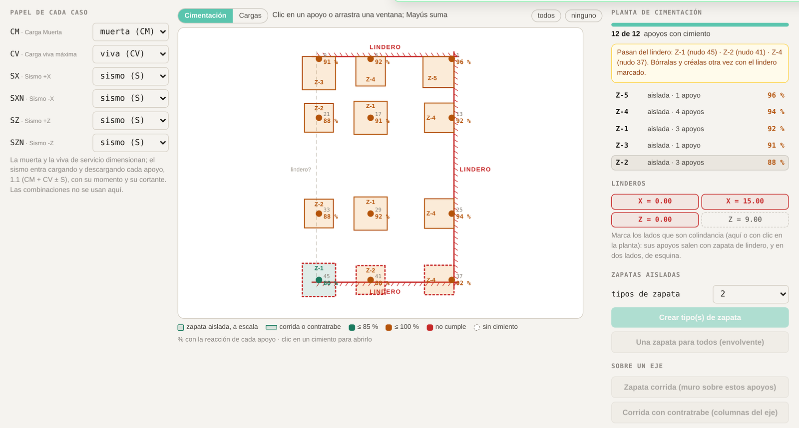
X = 0.00, Z = 9.00…, en los ejes del modelo). El lindero es el paño exterior de las columnas de ese lado.Cada zapata de lindero o de esquina se diseña en sus propios ejes, con la columna del lado −x (y −y en la esquina): la app gira o refleja las cargas de cada apoyo a esos ejes, así un mismo tipo sirve en los cuatro lados. Salen con trabe de liga, que toma el momento N·e; si tu estructura no la tiene, quítala en el formulario y vuelve a proponer. Una corrida sobre un lindero sale de lindero (el muro a la orilla); una contratrabe sobre un lindero se diseña centrada y lo avisa.
2 Salidas\Memoria.2 Salidas\Planos.Para saber qué está suponiendo la app cuando propone, y qué no revisa.
| Tema | Criterio |
|---|---|
| Materiales | f'c 250 kg/cm² y fy 4 200 kg/cm² para dimensionar la agrupación. Ec según NTC: clase 1 (f'c ≥ 250) 14 000√f'c con agregado calizo (11 000√f'c si es basáltico); clase 2 (200 ≤ f'c < 250) 8 000√f'c. |
| Sección mínima de una trabe (Agrupación) | Flexión: MR con ρ = ½ ρ balanceada, FR = 0.9, recubrimiento 3 cm; con eso se arma cómoda y es dúctil. Cortante: estribos #2.5 de dos ramas a no menos de 8 cm; si el acero de cortante pasa de FR · 1.1√f'c · b · d la separación máxima baja a d/4, y en poco peralte eso ya no se arma: pide peralte. Sin pasar del cortante máximo de la sección. |
| Propuestas de agrupación | Una clase sube a la sección del grupo de arriba si todas sus trabes caben y la más cargada la aprovecharía al menos al 50, 65 u 80 %. Sólo trabes horizontales; sólo secciones del catálogo con los anchos y peraltes permitidos. La sección se elige con la cuantía de dimensionamiento (½ ρ balanceada); el armado real lo pone después la verificación, que puede usar más acero (hasta 0.9 ρ balanceada) si hace falta. |
| Sección mínima de una columna (Agrupación) | El diagrama de interacción de cada sección con el armado de menos varillas entre 1.5 y 2.5 % de cuantía; P, Mx = |M33| y My = |M22| de la misma combinación, en el pie y la cabeza, con el contorno biaxial del módulo Columnas. Aprovechamiento: cuánto habría que crecer la demanda, P y M en la misma proporción, para llegar a la frontera. Mismos umbrales que las trabes; sólo columnas del catálogo y secciones permitidas. |
| Armado de trabes | El de menos acero que pasa con los motores de Longitudinal. Corridas por lecho: 3 si b ≤ 25 cm, 4 si b ≤ 35 cm, 5 si es mayor. Estribos #2.5 (o #3) de dos ramas. |
| Armado de columnas | Menos varillas primero; ρ de 1 a 4 %; separación c. a c. ≤ 20 cm; #4 o mayor si algún lado ≥ 20 cm. Flexocompresión con el diagrama de interacción de la app. |
| Estribos de columna | Centro y extremos según el capítulo 9, con H del modelo. |
| Cimentaciones | Las hojas de la oficina, corregidas. Suelo con cargas de servicio contra qe = qadm − γs (Df − h) − γc h, en t/m² (la hoja restaba t/m³ a kg/m²), con el área efectiva de Meyerhof B′ = B − 2e y e = (M + V h)/(N + W); con sismo, 1.33 qadm y el sismo cargando y descargando. Concreto con 1.3 CM + 1.5 CV y 1.1 (CM + CV + S): FR 0.9 en flexión y 0.75 en cortante; VcR = 0.5 FR b d √f'c (reducido si h > 70 cm); penetración FR (0.5 + γ) √f'c ≤ FR √f'c con la sección crítica de 4, 3 o 2 lados; aplastamiento FR 0.65, √(A2/A1) ≤ 2, y el excedente con arranques. Acero: el calculado, 4/3 de él o el mínimo, nunca menos que 0.0018 b h. Anclaje con Ld × As,req/As,prov (≥ 30 cm) o gancho a 90°. Muros: Rankine con talud, empuje × 1.5 para el concreto, FS de volteo 2.0 y de deslizamiento 1.5, resultante en el tercio medio. Mampostería: NTC-Mampostería, tabla 8.4 en linderos (capítulo 11). |
| Deflexiones | Con CS = 1·CM + 1·CV: elástica de RAM × IRAM/Ie (Branson, sección agrietada con el armado); diferida 2/(1 + 50ρ′) × inmediata de CS (clase 1); límites L/240 + 0.5 cm y L/480 + 0.3 cm, voladizos al doble (capítulo 10). |
Casi todos tienen que ver con cómo se corrió el script o con la carpeta.
| Qué ves | Por qué | Qué hacer |
|---|---|---|
IndentationError o SyntaxError en RAM | El script se pegó en el editor de la consola y se descompuso la sangría. | Abrir Script… → el archivo → Ctrl+R. Nunca pegado. |
'NoneType' object is not callable | Dentro de RAM, Python no puede borrar archivos ni crear carpetas. Un script viejo lo intentaba. | Baja el script otra vez desde la app; los actuales ya no lo hacen. |
Section not found: "15 X 20" | En esa computadora no está instalado el catálogo. | Corre instalar_catalogo.py (capítulo 2) y, si hace falta, reinicia RAM. |
La app no encuentra el modelo.json | La ruta dentro de sincronizar.py no es la carpeta que elegiste en la app. | En ⚙ Configurar RAM revisa la ruta, genera el script otra vez; o olvidar carpeta y elige la buena. |
| «no se pudo leer… ¿sólo en la nube?» | OneDrive tiene el archivo en la nube, no en la computadora. | Clic derecho en la carpeta → Conservar siempre en este dispositivo. |
| Demandas en cero, o las de antes | El modelo no se analizó después del último cambio. | Analiza en RAM y vuelve a correr sincronizar.py. |
| «medidas deducidas de los nombres» | El sincronizar.py es de una versión anterior. | Genera el script otra vez. |
| «Las demandas son de otra sección» | RAM analizó con otras medidas que las del proyecto. | Ver capítulo 4. Si dice «invertida», el error está en RAM. |
| Una trabe continua sale partida | En RAM sus tramos no comparten nudo o no son colineales. | Revísalo en la vista del modelo (Longitudinal) y corrige la geometría en RAM. |
| Un miembro que buscas en Agrupación no aparece | El buscador dice por qué: no existe, es columna, no es horizontal o su grupo no está marcado. | Si es su grupo, márcalo en Qué agrupar. |
| Guardar o exportar descargan en vez de ir a la carpeta | La obra no tiene carpeta configurada, o el navegador no dio permiso de edición. | Reportes de RAM → Sincronizar y acepta «editar archivos»; o genera el script otra vez eligiendo la carpeta. |
| «La carpeta ya tiene el proyecto X…» | Vas a guardar una obra encima de otra. | Cancela y revisa la ruta en Configurar RAM; si sí es la misma obra con otro nombre, acepta: la anterior queda en 3 Respaldos. |
| Deflexiones: «este modelo.json no trae desplazamientos» | El sincronizar.py es de una versión anterior. | Genera el script otra vez, córrelo y sincroniza. |
| Deflexiones: «? sin armado» | El proyecto no tiene esa sección. | Créala desde Reportes de RAM; mientras, sólo se ve la elástica de RAM, que se queda corta. |
| La planta de Agrupación no se parece a la de RAM | Se giró. | ↻ girar hasta que diga X↓ Z← · como RAM. |
| El aplicar dice que falta una sección | No se aplicó la agrupación: falta el catálogo en esa computadora. | instalar_catalogo.py, reinicia RAM y vuelve a aplicar. Si además dice que un miembro «se quedó con» otra sección al probar, cierra el modelo sin guardar. |
| Cimentaciones → Desde RAM: el modelo no trae reacciones, o sólo por combinación | El sincronizar.py es de una versión anterior: sin los casos no se pueden separar CM, CV y S. | Genera el script otra vez, córrelo y sincroniza. |
| Un cimiento no cumple ni con ⚡ Proponer | Suelo muy pobre, columna chica para su carga o resultante fuera de la base. | Lee el aviso bajo el veredicto: dice qué no alcanza y qué conviene. |
| Agrupación → Columnas: «Este modelo.json es de un sincronizar.py anterior» | Las columnas no traen M22 ni las fuerzas de cada combinación. | Genera el script otra vez, córrelo y sincroniza. |
Para aprender el flujo completo sin tocar una obra: un script construye en RAM un edificio pequeño, todo en 15×20 y sin agrupar, como cuando se empieza a estructurar.
COL 30 X 30 con descripción C1; 21 trabes continuas de 15×20 sin descripción, cada crujía en 4 tramos (204 miembros); concreto F'C 250.
Carga muerta y viva de losa por áreas tributarias, sismo estático en X y Z con sus dos signos, y las combinaciones de diseño. El script también lo analiza.
edificio_prueba.py (está en scripts/ram del repositorio de la app). En RAM: Archivo → Nuevo; el script se niega a trabajar sobre un modelo que ya tenga algo.Escritorio\Prueba Auxiliar; nunca en la de una obra.| Qué | Dónde |
|---|---|
| Catálogo de secciones | C:\ProgramData\Bentley\Engineering\RAM Elements\26.0.1\Database\Sections\Personales\Vigas de Concreto.sec y Columnas de Concreto.sec |
| Catálogo de concretos | …\Database\Materials\Personales\Concreto.mat |
| Respaldos del catálogo | Escritorio: Respaldo RAM - … |
| La carpeta de la app en cada obra | PROCESO\Auxiliar IV (la arma crear-proyectoiv.bat) |
| El proyecto y el modelo | Auxiliar IV\proyecto.json y Auxiliar IV\modelo.json |
| Deshacer una agrupación | Auxiliar IV\1 Agrupación\Deshacer agrupación <fecha>.py |
| Memoria, planos, Double Check | Auxiliar IV\2 Salidas\… (la memoria PDF de la cimentación en Memoria, sus DXF en Planos) |
| Suelo y criterios de la obra | Cimentaciones → 🪨 Suelo y criterios; se guardan con el proyecto. |
| Versiones anteriores | Auxiliar IV\3 Respaldos |
| Acomodo manual en curso | El navegador (se recupera al volver con el mismo modelo) |
| Palabra | Qué quiere decir |
|---|---|
| Grupo | Los miembros de RAM con la misma descripción. Cada grupo es una sección de la app. |
| Trabe continua | Tramos colineales y seguidos encadenados: una trabe, una sección. |
| Sección mínima | La de menos concreto del catálogo que le basta a una trabe. |
| Aprovechamiento | Demanda entre capacidad de dimensionamiento: en trabes, lo mayor de flexión y cortante; en columnas, qué tanto de su diagrama de interacción usa su punto más exigido. 100 % es justo. |
| Entrepiso | En Agrupación → Columnas: la columna entre dos niveles de trabes. E1 es el de abajo. |
| Fuerzas simultáneas | P, M22 y M33 de una misma combinación en un mismo punto de la columna; no el máximo de cada una por su lado. |
| Armado propuesto | El que pone la app al crear una sección; se marca hasta que lo edites. |
| Tramo | En Deflexiones: la parte de una trabe continua entre dos apoyos, o un voladizo. |
| Ie | Inercia efectiva de la sección agrietada (Branson), con el armado de la sección. |
| qe | Capacidad efectiva del suelo: qadm menos el relleno sobre el cimiento y su peso propio. Contra ella se compara la presión de las cargas. |
| B′ (área efectiva) | El ancho que de verdad apoya cuando la carga no cae al centro: B − 2e (Meyerhof). |
| Estaciones | Los puntos a lo largo de cada miembro donde RAM da resultados. |
| sin nombre | Los miembros sin descripción en RAM: todavía no agrupados. |
| Ctrl+K | Abrir un módulo desde cualquier lugar. |
| Ctrl+R (en RAM) | Correr el script abierto en la consola de Python. |
| Mayús + clic derecho | En el explorador de Windows: Copiar como ruta. |
| Mayús / Ctrl + clic, Esc | En la planta de Agrupación: sumar o quitar trabes, y limpiar. |
| Ctrl+Z | En Cimentaciones: deshacer (medidas, varillas, cimientos borrados). |
| Enter / Mayús+Enter | En el buscador de miembros de Agrupación: seleccionar su trabe, o sumarla. |